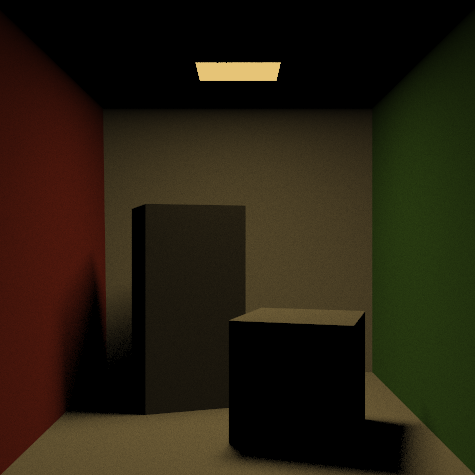
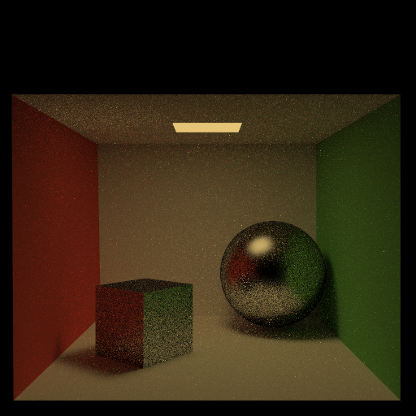
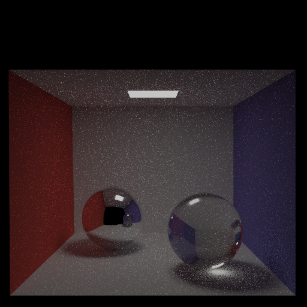
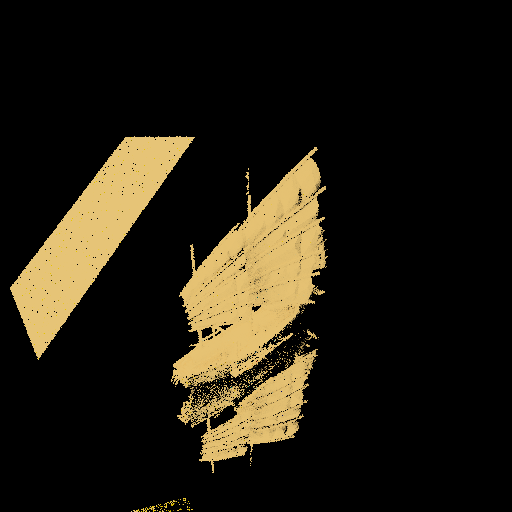
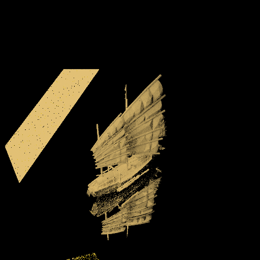
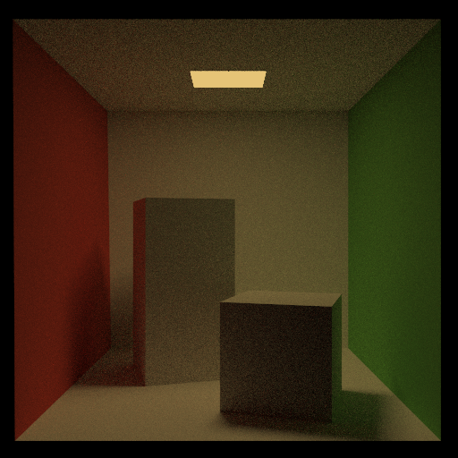
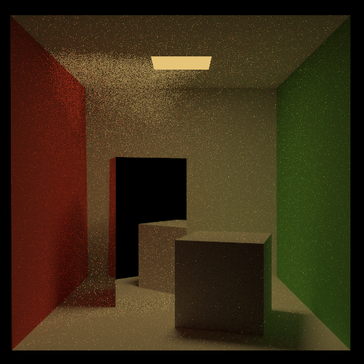
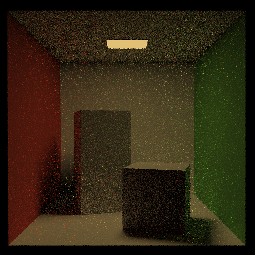

CSCI2240 Advanced Computer Graphics
Spring 2024 • 2 weeks

In CSCI1230 Computer Graphics, I had previously implemented a basic raytracer. This shot one ray per pixel at a given scene and could handle direct lighting and reflections (mostly). For this assignment, I implemented a physically-based renderer based on the path tracing algorithm. I built upon the basic raytracer to handle more complex scenes, with support for different and indirect lighting to create even more realistic scenes.
Path tracing is a simple, elegant Monte Carlo sampling approach to solving the rendering equation. Like ray tracing, it produces images by firing rays from the eye/camera into the scene. Unlike basic ray tracing, it generates recursive bounce rays in a physically accurate manner, making it an unbiased estimator for the rendering equation. Path tracers support a wide variety of interesting visual effects (soft shadows, color bleeding, caustics, etc.), though they may take a long time to converge to a noise-free image.
Firstly, I implemented a variety of BRDFs to model how light interacts with different surfaces. A BRDF is a function that defines how light is reflected or absorbed by a surface based on the angle of the light, the surface, and the ray. For the assignment I implemeted 4 BRDFs: diffuse surfaces, glossy reflections, mirror reflections, and refractions.



For the assignment, by tracing bouncing rays and using the Russion Roulette technique for ray termination, I was able to implement an efficient algorithm to mimic indirect illumination. This can be seen in the floor of the above images where the red from the box or the colors from the glass orbs bleeds slightly onto the floor due to the light that bounces off of those objects and onto the floor.
Lastly, I implemented stratifed sampling and low discrepancy, which are both methods that help reduce noise in the final rendered image by shooting mutiple rays per pixel. This results in cleaner images with more definition. In the following images you can see the difference that these methods make in the final output.


The Result was a fully functional pathtracer with really cool features. Here are some of the renders I was able to create!


